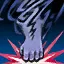

Hurricane Assault
Classes with this skill: Monk, Tyrant.
Supplements the user's P. Atk. with 3196 Power to strike the target with rapid consecutive strikes. Requires a hand-to-hand weapon recharged to its 2nd energy stage. Over-hit and critical hit are possible. Ignores Shield Defense.
Skill information
Skill levels
Skill enchant - Power
Skill enchant - Cost
Skill enchant - Fire Attack 
Skill enchant - Water Attack 
Skill enchant - Wind Attack 
Skill enchant - Earth Attack 
Skill enchant - Duel
All
Skill information
skill_name
s_hurricane_assault162
skill_id
284
max_level
40
operate_type
A1
max_magic_level (no enchant)
74
effect
{i_energy_attack;3196;15;0;1;0}
operate_cond
{equip_weapon;{dualfist}};{energy_saved;2}
mp_consume2
105
cast_range
40
effective_range
400
skill_hit_time
1.36
skill_cool_time
0.44
skill_hit_cancel_time
0.5
reuse_delay
4
attribute
attr_none;0
trait
trait_none
effect_point
-582
target_type
enemy
affect_scope
single
affect_limit
0;0
next_action
attack
ride_state
@ride_none
olympiad_use
1
consume_etc
2;0
icon
skill0284
Skill levels
Name and description
MP Consume
Magic Lvl
Power
Hurricane Assault Lv.1
Supplements the user's P. Atk. with 501 Power to strike the target with rapid consecutive strikes. Requires a hand-to-hand weapon recharged to its 2nd energy stage. Over-hit and critical hit are possible. Ignores Shield Defense.
44
34
501
Hurricane Assault Lv.2
Supplements the user's P. Atk. with 535 Power to strike the target with rapid consecutive strikes. Requires a hand-to-hand weapon recharged to its 2nd energy stage. Over-hit and critical hit are possible. Ignores Shield Defense.
45
35
535
Hurricane Assault Lv.3
Supplements the user's P. Atk. with 570 Power to strike the target with rapid consecutive strikes. Requires a hand-to-hand weapon recharged to its 2nd energy stage. Over-hit and critical hit are possible. Ignores Shield Defense.
47
36
570
Hurricane Assault Lv.4
Supplements the user's P. Atk. with 607 Power to strike the target with rapid consecutive strikes. Requires a hand-to-hand weapon recharged to its 2nd energy stage. Over-hit and critical hit are possible. Ignores Shield Defense.
50
38
607
Hurricane Assault Lv.5
Supplements the user's P. Atk. with 646 Power to strike the target with rapid consecutive strikes. Requires a hand-to-hand weapon recharged to its 2nd energy stage. Over-hit and critical hit are possible. Ignores Shield Defense.
52
39
646
Hurricane Assault Lv.6
Supplements the user's P. Atk. with 729 Power to strike the target with rapid consecutive strikes. Requires a hand-to-hand weapon recharged to its 2nd energy stage. Over-hit and critical hit are possible. Ignores Shield Defense.
54
40
729
Hurricane Assault Lv.7
Supplements the user's P. Atk. with 773 Power to strike the target with rapid consecutive strikes. Requires a hand-to-hand weapon recharged to its 2nd energy stage. Over-hit and critical hit are possible. Ignores Shield Defense.
54
41
773
Hurricane Assault Lv.8
Supplements the user's P. Atk. with 820 Power to strike the target with rapid consecutive strikes. Requires a hand-to-hand weapon recharged to its 2nd energy stage. Over-hit and critical hit are possible. Ignores Shield Defense.
55
42
820
Hurricane Assault Lv.9
Supplements the user's P. Atk. with 868 Power to strike the target with rapid consecutive strikes. Requires a hand-to-hand weapon recharged to its 2nd energy stage. Over-hit and critical hit are possible. Ignores Shield Defense.
57
43
868
Hurricane Assault Lv.10
Supplements the user's P. Atk. with 918 Power to strike the target with rapid consecutive strikes. Requires a hand-to-hand weapon recharged to its 2nd energy stage. Over-hit and critical hit are possible. Ignores Shield Defense.
59
44
918
Hurricane Assault Lv.11
Supplements the user's P. Atk. with 971 Power to strike the target with rapid consecutive strikes. Requires a hand-to-hand weapon recharged to its 2nd energy stage. Over-hit and critical hit are possible. Ignores Shield Defense.
60
45
971
Hurricane Assault Lv.12
Supplements the user's P. Atk. with 1025 Power to strike the target with rapid consecutive strikes. Requires a hand-to-hand weapon recharged to its 2nd energy stage. Over-hit and critical hit are possible. Ignores Shield Defense.
62
46
1025
Hurricane Assault Lv.13
Supplements the user's P. Atk. with 1081 Power to strike the target with rapid consecutive strikes. Requires a hand-to-hand weapon recharged to its 2nd energy stage. Over-hit and critical hit are possible. Ignores Shield Defense.
64
47
1081
Hurricane Assault Lv.14
Supplements the user's P. Atk. with 1140 Power to strike the target with rapid consecutive strikes. Requires a hand-to-hand weapon recharged to its 2nd energy stage. Over-hit and critical hit are possible. Ignores Shield Defense.
66
48
1140
Hurricane Assault Lv.15
Supplements the user's P. Atk. with 1200 Power to strike the target with rapid consecutive strikes. Requires a hand-to-hand weapon recharged to its 2nd energy stage. Over-hit and critical hit are possible. Ignores Shield Defense.
67
49
1200
Hurricane Assault Lv.16
Supplements the user's P. Atk. with 1262 Power to strike the target with rapid consecutive strikes. Requires a hand-to-hand weapon recharged to its 2nd energy stage. Over-hit and critical hit are possible. Ignores Shield Defense.
69
50
1262
Hurricane Assault Lv.17
Supplements the user's P. Atk. with 1327 Power to strike the target with rapid consecutive strikes. Requires a hand-to-hand weapon recharged to its 2nd energy stage. Over-hit and critical hit are possible. Ignores Shield Defense.
69
51
1327
Hurricane Assault Lv.18
Supplements the user's P. Atk. with 1393 Power to strike the target with rapid consecutive strikes. Requires a hand-to-hand weapon recharged to its 2nd energy stage. Over-hit and critical hit are possible. Ignores Shield Defense.
71
52
1393
Hurricane Assault Lv.19
Supplements the user's P. Atk. with 1461 Power to strike the target with rapid consecutive strikes. Requires a hand-to-hand weapon recharged to its 2nd energy stage. Over-hit and critical hit are possible. Ignores Shield Defense.
73
53
1461
Hurricane Assault Lv.20
Supplements the user's P. Atk. with 1531 Power to strike the target with rapid consecutive strikes. Requires a hand-to-hand weapon recharged to its 2nd energy stage. Over-hit and critical hit are possible. Ignores Shield Defense.
75
54
1531
Hurricane Assault Lv.21
Supplements the user's P. Atk. with 1603 Power to strike the target with rapid consecutive strikes. Requires a hand-to-hand weapon recharged to its 2nd energy stage. Over-hit and critical hit are possible. Ignores Shield Defense.
76
55
1603
Hurricane Assault Lv.22
Supplements the user's P. Atk. with 1677 Power to strike the target with rapid consecutive strikes. Requires a hand-to-hand weapon recharged to its 2nd energy stage. Over-hit and critical hit are possible. Ignores Shield Defense.
78
56
1677
Hurricane Assault Lv.23
Supplements the user's P. Atk. with 1753 Power to strike the target with rapid consecutive strikes. Requires a hand-to-hand weapon recharged to its 2nd energy stage. Over-hit and critical hit are possible. Ignores Shield Defense.
80
57
1753
Hurricane Assault Lv.24
Supplements the user's P. Atk. with 1830 Power to strike the target with rapid consecutive strikes. Requires a hand-to-hand weapon recharged to its 2nd energy stage. Over-hit and critical hit are possible. Ignores Shield Defense.
82
58
1830
Hurricane Assault Lv.25
Supplements the user's P. Atk. with 1908 Power to strike the target with rapid consecutive strikes. Requires a hand-to-hand weapon recharged to its 2nd energy stage. Over-hit and critical hit are possible. Ignores Shield Defense.
83
59
1908
Hurricane Assault Lv.26
Supplements the user's P. Atk. with 1988 Power to strike the target with rapid consecutive strikes. Requires a hand-to-hand weapon recharged to its 2nd energy stage. Over-hit and critical hit are possible. Ignores Shield Defense.
85
60
1988
Hurricane Assault Lv.27
Supplements the user's P. Atk. with 2070 Power to strike the target with rapid consecutive strikes. Requires a hand-to-hand weapon recharged to its 2nd energy stage. Over-hit and critical hit are possible. Ignores Shield Defense.
85
61
2070
Hurricane Assault Lv.28
Supplements the user's P. Atk. with 2153 Power to strike the target with rapid consecutive strikes. Requires a hand-to-hand weapon recharged to its 2nd energy stage. Over-hit and critical hit are possible. Ignores Shield Defense.
87
62
2153
Hurricane Assault Lv.29
Supplements the user's P. Atk. with 2237 Power to strike the target with rapid consecutive strikes. Requires a hand-to-hand weapon recharged to its 2nd energy stage. Over-hit and critical hit are possible. Ignores Shield Defense.
89
63
2237
Hurricane Assault Lv.30
Supplements the user's P. Atk. with 2322 Power to strike the target with rapid consecutive strikes. Requires a hand-to-hand weapon recharged to its 2nd energy stage. Over-hit and critical hit are possible. Ignores Shield Defense.
90
64
2322
Hurricane Assault Lv.31
Supplements the user's P. Atk. with 2408 Power to strike the target with rapid consecutive strikes. Requires a hand-to-hand weapon recharged to its 2nd energy stage. Over-hit and critical hit are possible. Ignores Shield Defense.
92
65
2408
Hurricane Assault Lv.32
Supplements the user's P. Atk. with 2494 Power to strike the target with rapid consecutive strikes. Requires a hand-to-hand weapon recharged to its 2nd energy stage. Over-hit and critical hit are possible. Ignores Shield Defense.
93
66
2494
Hurricane Assault Lv.33
Supplements the user's P. Atk. with 2581 Power to strike the target with rapid consecutive strikes. Requires a hand-to-hand weapon recharged to its 2nd energy stage. Over-hit and critical hit are possible. Ignores Shield Defense.
95
67
2581
Hurricane Assault Lv.34
Supplements the user's P. Atk. with 2669 Power to strike the target with rapid consecutive strikes. Requires a hand-to-hand weapon recharged to its 2nd energy stage. Over-hit and critical hit are possible. Ignores Shield Defense.
96
68
2669
Hurricane Assault Lv.35
Supplements the user's P. Atk. with 2757 Power to strike the target with rapid consecutive strikes. Requires a hand-to-hand weapon recharged to its 2nd energy stage. Over-hit and critical hit are possible. Ignores Shield Defense.
98
69
2757
Hurricane Assault Lv.36
Supplements the user's P. Atk. with 2846 Power to strike the target with rapid consecutive strikes. Requires a hand-to-hand weapon recharged to its 2nd energy stage. Over-hit and critical hit are possible. Ignores Shield Defense.
99
70
2846
Hurricane Assault Lv.37
Supplements the user's P. Atk. with 2934 Power to strike the target with rapid consecutive strikes. Requires a hand-to-hand weapon recharged to its 2nd energy stage. Over-hit and critical hit are possible. Ignores Shield Defense.
101
71
2934
Hurricane Assault Lv.38
Supplements the user's P. Atk. with 3022 Power to strike the target with rapid consecutive strikes. Requires a hand-to-hand weapon recharged to its 2nd energy stage. Over-hit and critical hit are possible. Ignores Shield Defense.
102
72
3022
Hurricane Assault Lv.39
Supplements the user's P. Atk. with 3109 Power to strike the target with rapid consecutive strikes. Requires a hand-to-hand weapon recharged to its 2nd energy stage. Over-hit and critical hit are possible. Ignores Shield Defense.
104
73
3109
Hurricane Assault Lv.40
Supplements the user's P. Atk. with 3196 Power to strike the target with rapid consecutive strikes. Requires a hand-to-hand weapon recharged to its 2nd energy stage. Over-hit and critical hit are possible. Ignores Shield Defense.
105
74
3196
Skill enchant - Power
Name and description
Magic Lvl
Power
Hurricane Assault +1 Power
Supplements the user's P. Atk. with 3225 Power to strike the target with rapid consecutive strikes. Requires a hand-to-hand weapon recharged to its 2nd energy stage. Over-hit and critical hit are possible. Ignores Shield Defense. Enchant Power: Increases Power.
76
3225
Hurricane Assault +2 Power
Supplements the user's P. Atk. with 3254 Power to strike the target with rapid consecutive strikes. Requires a hand-to-hand weapon recharged to its 2nd energy stage. Over-hit and critical hit are possible. Ignores Shield Defense. Enchant Power: Increases Power.
76
3254
Hurricane Assault +3 Power
Supplements the user's P. Atk. with 3283 Power to strike the target with rapid consecutive strikes. Requires a hand-to-hand weapon recharged to its 2nd energy stage. Over-hit and critical hit are possible. Ignores Shield Defense. Enchant Power: Increases Power.
76
3283
Hurricane Assault +4 Power
Supplements the user's P. Atk. with 3312 Power to strike the target with rapid consecutive strikes. Requires a hand-to-hand weapon recharged to its 2nd energy stage. Over-hit and critical hit are possible. Ignores Shield Defense. Enchant Power: Increases Power.
77
3312
Hurricane Assault +5 Power
Supplements the user's P. Atk. with 3340 Power to strike the target with rapid consecutive strikes. Requires a hand-to-hand weapon recharged to its 2nd energy stage. Over-hit and critical hit are possible. Ignores Shield Defense. Enchant Power: Increases Power.
77
3340
Hurricane Assault +6 Power
Supplements the user's P. Atk. with 3369 Power to strike the target with rapid consecutive strikes. Requires a hand-to-hand weapon recharged to its 2nd energy stage. Over-hit and critical hit are possible. Ignores Shield Defense. Enchant Power: Increases Power.
77
3369
Hurricane Assault +7 Power
Supplements the user's P. Atk. with 3398 Power to strike the target with rapid consecutive strikes. Requires a hand-to-hand weapon recharged to its 2nd energy stage. Over-hit and critical hit are possible. Ignores Shield Defense. Enchant Power: Increases Power.
78
3398
Hurricane Assault +8 Power
Supplements the user's P. Atk. with 3427 Power to strike the target with rapid consecutive strikes. Requires a hand-to-hand weapon recharged to its 2nd energy stage. Over-hit and critical hit are possible. Ignores Shield Defense. Enchant Power: Increases Power.
78
3427
Hurricane Assault +9 Power
Supplements the user's P. Atk. with 3456 Power to strike the target with rapid consecutive strikes. Requires a hand-to-hand weapon recharged to its 2nd energy stage. Over-hit and critical hit are possible. Ignores Shield Defense. Enchant Power: Increases Power.
78
3456
Hurricane Assault +10 Power
Supplements the user's P. Atk. with 3484 Power to strike the target with rapid consecutive strikes. Requires a hand-to-hand weapon recharged to its 2nd energy stage. Over-hit and critical hit are possible. Ignores Shield Defense. Enchant Power: Increases Power.
79
3484
Hurricane Assault +11 Power
Supplements the user's P. Atk. with 3513 Power to strike the target with rapid consecutive strikes. Requires a hand-to-hand weapon recharged to its 2nd energy stage. Over-hit and critical hit are possible. Ignores Shield Defense. Enchant Power: Increases Power.
79
3513
Hurricane Assault +12 Power
Supplements the user's P. Atk. with 3542 Power to strike the target with rapid consecutive strikes. Requires a hand-to-hand weapon recharged to its 2nd energy stage. Over-hit and critical hit are possible. Ignores Shield Defense. Enchant Power: Increases Power.
79
3542
Hurricane Assault +13 Power
Supplements the user's P. Atk. with 3571 Power to strike the target with rapid consecutive strikes. Requires a hand-to-hand weapon recharged to its 2nd energy stage. Over-hit and critical hit are possible. Ignores Shield Defense. Enchant Power: Increases Power.
80
3571
Hurricane Assault +14 Power
Supplements the user's P. Atk. with 3600 Power to strike the target with rapid consecutive strikes. Requires a hand-to-hand weapon recharged to its 2nd energy stage. Over-hit and critical hit are possible. Ignores Shield Defense. Enchant Power: Increases Power.
80
3600
Hurricane Assault +15 Power
Supplements the user's P. Atk. with 3628 Power to strike the target with rapid consecutive strikes. Requires a hand-to-hand weapon recharged to its 2nd energy stage. Over-hit and critical hit are possible. Ignores Shield Defense. Enchant Power: Increases Power.
80
3628
Hurricane Assault +16 Power
Supplements the user's P. Atk. with 3657 Power to strike the target with rapid consecutive strikes. Requires a hand-to-hand weapon recharged to its 2nd energy stage. Over-hit and critical hit are possible. Ignores Shield Defense. Enchant Power: Increases Power.
81
3657
Hurricane Assault +17 Power
Supplements the user's P. Atk. with 3686 Power to strike the target with rapid consecutive strikes. Requires a hand-to-hand weapon recharged to its 2nd energy stage. Over-hit and critical hit are possible. Ignores Shield Defense. Enchant Power: Increases Power.
81
3686
Hurricane Assault +18 Power
Supplements the user's P. Atk. with 3715 Power to strike the target with rapid consecutive strikes. Requires a hand-to-hand weapon recharged to its 2nd energy stage. Over-hit and critical hit are possible. Ignores Shield Defense. Enchant Power: Increases Power.
81
3715
Hurricane Assault +19 Power
Supplements the user's P. Atk. with 3744 Power to strike the target with rapid consecutive strikes. Requires a hand-to-hand weapon recharged to its 2nd energy stage. Over-hit and critical hit are possible. Ignores Shield Defense. Enchant Power: Increases Power.
82
3744
Hurricane Assault +20 Power
Supplements the user's P. Atk. with 3772 Power to strike the target with rapid consecutive strikes. Requires a hand-to-hand weapon recharged to its 2nd energy stage. Over-hit and critical hit are possible. Ignores Shield Defense. Enchant Power: Increases Power.
82
3772
Hurricane Assault +21 Power
Supplements the user's P. Atk. with 3801 Power to strike the target with rapid consecutive strikes. Requires a hand-to-hand weapon recharged to its 2nd energy stage. Over-hit and critical hit are possible. Ignores Shield Defense. Enchant Power: Increases Power.
82
3801
Hurricane Assault +22 Power
Supplements the user's P. Atk. with 3830 Power to strike the target with rapid consecutive strikes. Requires a hand-to-hand weapon recharged to its 2nd energy stage. Over-hit and critical hit are possible. Ignores Shield Defense. Enchant Power: Increases Power.
83
3830
Hurricane Assault +23 Power
Supplements the user's P. Atk. with 3859 Power to strike the target with rapid consecutive strikes. Requires a hand-to-hand weapon recharged to its 2nd energy stage. Over-hit and critical hit are possible. Ignores Shield Defense. Enchant Power: Increases Power.
83
3859
Hurricane Assault +24 Power
Supplements the user's P. Atk. with 3888 Power to strike the target with rapid consecutive strikes. Requires a hand-to-hand weapon recharged to its 2nd energy stage. Over-hit and critical hit are possible. Ignores Shield Defense. Enchant Power: Increases Power.
83
3888
Hurricane Assault +25 Power
Supplements the user's P. Atk. with 3916 Power to strike the target with rapid consecutive strikes. Requires a hand-to-hand weapon recharged to its 2nd energy stage. Over-hit and critical hit are possible. Ignores Shield Defense. Enchant Power: Increases Power.
84
3916
Hurricane Assault +26 Power
Supplements the user's P. Atk. with 3945 Power to strike the target with rapid consecutive strikes. Requires a hand-to-hand weapon recharged to its 2nd energy stage. Over-hit and critical hit are possible. Ignores Shield Defense. Enchant Power: Increases Power.
84
3945
Hurricane Assault +27 Power
Supplements the user's P. Atk. with 3974 Power to strike the target with rapid consecutive strikes. Requires a hand-to-hand weapon recharged to its 2nd energy stage. Over-hit and critical hit are possible. Ignores Shield Defense. Enchant Power: Increases Power.
84
3974
Hurricane Assault +28 Power
Supplements the user's P. Atk. with 4003 Power to strike the target with rapid consecutive strikes. Requires a hand-to-hand weapon recharged to its 2nd energy stage. Over-hit and critical hit are possible. Ignores Shield Defense. Enchant Power: Increases Power.
85
4003
Hurricane Assault +29 Power
Supplements the user's P. Atk. with 4032 Power to strike the target with rapid consecutive strikes. Requires a hand-to-hand weapon recharged to its 2nd energy stage. Over-hit and critical hit are possible. Ignores Shield Defense. Enchant Power: Increases Power.
85
4032
Hurricane Assault +30 Power
Supplements the user's P. Atk. with 4061 Power to strike the target with rapid consecutive strikes. Requires a hand-to-hand weapon recharged to its 2nd energy stage. Over-hit and critical hit are possible. Ignores Shield Defense. Enchant Power: Increases Power.
85
4061
Skill enchant - Cost
Name and description
Magic Lvl
MP Consume
Hurricane Assault +1 Cost
Supplements the user's P. Atk. with 3196 Power to strike the target with rapid consecutive strikes. Requires a hand-to-hand weapon recharged to its 2nd energy stage. Over-hit and critical hit are possible. Ignores Shield Defense. Enchant Cost: Decreases MP consumption.
76
104
Hurricane Assault +2 Cost
Supplements the user's P. Atk. with 3196 Power to strike the target with rapid consecutive strikes. Requires a hand-to-hand weapon recharged to its 2nd energy stage. Over-hit and critical hit are possible. Ignores Shield Defense. Enchant Cost: Decreases MP consumption.
76
103
Hurricane Assault +3 Cost
Supplements the user's P. Atk. with 3196 Power to strike the target with rapid consecutive strikes. Requires a hand-to-hand weapon recharged to its 2nd energy stage. Over-hit and critical hit are possible. Ignores Shield Defense. Enchant Cost: Decreases MP consumption.
76
102
Hurricane Assault +4 Cost
Supplements the user's P. Atk. with 3196 Power to strike the target with rapid consecutive strikes. Requires a hand-to-hand weapon recharged to its 2nd energy stage. Over-hit and critical hit are possible. Ignores Shield Defense. Enchant Cost: Decreases MP consumption.
77
102
Hurricane Assault +5 Cost
Supplements the user's P. Atk. with 3196 Power to strike the target with rapid consecutive strikes. Requires a hand-to-hand weapon recharged to its 2nd energy stage. Over-hit and critical hit are possible. Ignores Shield Defense. Enchant Cost: Decreases MP consumption.
77
101
Hurricane Assault +6 Cost
Supplements the user's P. Atk. with 3196 Power to strike the target with rapid consecutive strikes. Requires a hand-to-hand weapon recharged to its 2nd energy stage. Over-hit and critical hit are possible. Ignores Shield Defense. Enchant Cost: Decreases MP consumption.
77
101
Hurricane Assault +7 Cost
Supplements the user's P. Atk. with 3196 Power to strike the target with rapid consecutive strikes. Requires a hand-to-hand weapon recharged to its 2nd energy stage. Over-hit and critical hit are possible. Ignores Shield Defense. Enchant Cost: Decreases MP consumption.
78
100
Hurricane Assault +8 Cost
Supplements the user's P. Atk. with 3196 Power to strike the target with rapid consecutive strikes. Requires a hand-to-hand weapon recharged to its 2nd energy stage. Over-hit and critical hit are possible. Ignores Shield Defense. Enchant Cost: Decreases MP consumption.
78
99
Hurricane Assault +9 Cost
Supplements the user's P. Atk. with 3196 Power to strike the target with rapid consecutive strikes. Requires a hand-to-hand weapon recharged to its 2nd energy stage. Over-hit and critical hit are possible. Ignores Shield Defense. Enchant Cost: Decreases MP consumption.
78
99
Hurricane Assault +10 Cost
Supplements the user's P. Atk. with 3196 Power to strike the target with rapid consecutive strikes. Requires a hand-to-hand weapon recharged to its 2nd energy stage. Over-hit and critical hit are possible. Ignores Shield Defense. Enchant Cost: Decreases MP consumption.
79
98
Hurricane Assault +11 Cost
Supplements the user's P. Atk. with 3196 Power to strike the target with rapid consecutive strikes. Requires a hand-to-hand weapon recharged to its 2nd energy stage. Over-hit and critical hit are possible. Ignores Shield Defense. Enchant Cost: Decreases MP consumption.
79
97
Hurricane Assault +12 Cost
Supplements the user's P. Atk. with 3196 Power to strike the target with rapid consecutive strikes. Requires a hand-to-hand weapon recharged to its 2nd energy stage. Over-hit and critical hit are possible. Ignores Shield Defense. Enchant Cost: Decreases MP consumption.
79
97
Hurricane Assault +13 Cost
Supplements the user's P. Atk. with 3196 Power to strike the target with rapid consecutive strikes. Requires a hand-to-hand weapon recharged to its 2nd energy stage. Over-hit and critical hit are possible. Ignores Shield Defense. Enchant Cost: Decreases MP consumption.
80
96
Hurricane Assault +14 Cost
Supplements the user's P. Atk. with 3196 Power to strike the target with rapid consecutive strikes. Requires a hand-to-hand weapon recharged to its 2nd energy stage. Over-hit and critical hit are possible. Ignores Shield Defense. Enchant Cost: Decreases MP consumption.
80
95
Hurricane Assault +15 Cost
Supplements the user's P. Atk. with 3196 Power to strike the target with rapid consecutive strikes. Requires a hand-to-hand weapon recharged to its 2nd energy stage. Over-hit and critical hit are possible. Ignores Shield Defense. Enchant Cost: Decreases MP consumption.
80
95
Hurricane Assault +16 Cost
Supplements the user's P. Atk. with 3196 Power to strike the target with rapid consecutive strikes. Requires a hand-to-hand weapon recharged to its 2nd energy stage. Over-hit and critical hit are possible. Ignores Shield Defense. Enchant Cost: Decreases MP consumption.
81
94
Hurricane Assault +17 Cost
Supplements the user's P. Atk. with 3196 Power to strike the target with rapid consecutive strikes. Requires a hand-to-hand weapon recharged to its 2nd energy stage. Over-hit and critical hit are possible. Ignores Shield Defense. Enchant Cost: Decreases MP consumption.
81
93
Hurricane Assault +18 Cost
Supplements the user's P. Atk. with 3196 Power to strike the target with rapid consecutive strikes. Requires a hand-to-hand weapon recharged to its 2nd energy stage. Over-hit and critical hit are possible. Ignores Shield Defense. Enchant Cost: Decreases MP consumption.
81
93
Hurricane Assault +19 Cost
Supplements the user's P. Atk. with 3196 Power to strike the target with rapid consecutive strikes. Requires a hand-to-hand weapon recharged to its 2nd energy stage. Over-hit and critical hit are possible. Ignores Shield Defense. Enchant Cost: Decreases MP consumption.
82
92
Hurricane Assault +20 Cost
Supplements the user's P. Atk. with 3196 Power to strike the target with rapid consecutive strikes. Requires a hand-to-hand weapon recharged to its 2nd energy stage. Over-hit and critical hit are possible. Ignores Shield Defense. Enchant Cost: Decreases MP consumption.
82
91
Hurricane Assault +21 Cost
Supplements the user's P. Atk. with 3196 Power to strike the target with rapid consecutive strikes. Requires a hand-to-hand weapon recharged to its 2nd energy stage. Over-hit and critical hit are possible. Ignores Shield Defense. Enchant Cost: Decreases MP consumption.
82
91
Hurricane Assault +22 Cost
Supplements the user's P. Atk. with 3196 Power to strike the target with rapid consecutive strikes. Requires a hand-to-hand weapon recharged to its 2nd energy stage. Over-hit and critical hit are possible. Ignores Shield Defense. Enchant Cost: Decreases MP consumption.
83
90
Hurricane Assault +23 Cost
Supplements the user's P. Atk. with 3196 Power to strike the target with rapid consecutive strikes. Requires a hand-to-hand weapon recharged to its 2nd energy stage. Over-hit and critical hit are possible. Ignores Shield Defense. Enchant Cost: Decreases MP consumption.
83
90
Hurricane Assault +24 Cost
Supplements the user's P. Atk. with 3196 Power to strike the target with rapid consecutive strikes. Requires a hand-to-hand weapon recharged to its 2nd energy stage. Over-hit and critical hit are possible. Ignores Shield Defense. Enchant Cost: Decreases MP consumption.
83
89
Hurricane Assault +25 Cost
Supplements the user's P. Atk. with 3196 Power to strike the target with rapid consecutive strikes. Requires a hand-to-hand weapon recharged to its 2nd energy stage. Over-hit and critical hit are possible. Ignores Shield Defense. Enchant Cost: Decreases MP consumption.
84
88
Hurricane Assault +26 Cost
Supplements the user's P. Atk. with 3196 Power to strike the target with rapid consecutive strikes. Requires a hand-to-hand weapon recharged to its 2nd energy stage. Over-hit and critical hit are possible. Ignores Shield Defense. Enchant Cost: Decreases MP consumption.
84
88
Hurricane Assault +27 Cost
Supplements the user's P. Atk. with 3196 Power to strike the target with rapid consecutive strikes. Requires a hand-to-hand weapon recharged to its 2nd energy stage. Over-hit and critical hit are possible. Ignores Shield Defense. Enchant Cost: Decreases MP consumption.
84
87
Hurricane Assault +28 Cost
Supplements the user's P. Atk. with 3196 Power to strike the target with rapid consecutive strikes. Requires a hand-to-hand weapon recharged to its 2nd energy stage. Over-hit and critical hit are possible. Ignores Shield Defense. Enchant Cost: Decreases MP consumption.
85
86
Hurricane Assault +29 Cost
Supplements the user's P. Atk. with 3196 Power to strike the target with rapid consecutive strikes. Requires a hand-to-hand weapon recharged to its 2nd energy stage. Over-hit and critical hit are possible. Ignores Shield Defense. Enchant Cost: Decreases MP consumption.
85
86
Hurricane Assault +30 Cost
Supplements the user's P. Atk. with 3196 Power to strike the target with rapid consecutive strikes. Requires a hand-to-hand weapon recharged to its 2nd energy stage. Over-hit and critical hit are possible. Ignores Shield Defense. Enchant Cost: Decreases MP consumption.
85
85
Skill enchant - Fire Attack
Name and description
Magic Lvl
Attribute Power
Attribute
Hurricane Assault +1 Fire Attack
Supplements the user's P. Atk. with 3196 Power to strike the target with rapid consecutive strikes. A hand-to-hand weapon whose 2nd energy stage has been recharged must be equipped. Ignores Shield Defense. Over-hit and critical hit are possible. Enchant Fire Attack: Increases Fire damage by 1.
76
1
0
Hurricane Assault +2 Fire Attack
Supplements the user's P. Atk. with 3196 Power to strike the target with rapid consecutive strikes. A hand-to-hand weapon whose 2nd energy stage has been recharged must be equipped. Ignores Shield Defense. Over-hit and critical hit are possible. Enchant Fire Attack: Increases Fire damage by 3.
76
3
0
Hurricane Assault +3 Fire Attack
Supplements the user's P. Atk. with 3196 Power to strike the target with rapid consecutive strikes. A hand-to-hand weapon whose 2nd energy stage has been recharged must be equipped. Ignores Shield Defense. Over-hit and critical hit are possible. Enchant Fire Attack: Increases Fire damage by 5.
76
5
0
Hurricane Assault +4 Fire Attack
Supplements the user's P. Atk. with 3196 Power to strike the target with rapid consecutive strikes. A hand-to-hand weapon whose 2nd energy stage has been recharged must be equipped. Ignores Shield Defense. Over-hit and critical hit are possible. Enchant Fire Attack: Increases Fire damage by 6.
77
6
0
Hurricane Assault +5 Fire Attack
Supplements the user's P. Atk. with 3196 Power to strike the target with rapid consecutive strikes. A hand-to-hand weapon whose 2nd energy stage has been recharged must be equipped. Ignores Shield Defense. Over-hit and critical hit are possible. Enchant Fire Attack: Increases Fire damage by 8.
77
8
0
Hurricane Assault +6 Fire Attack
Supplements the user's P. Atk. with 3196 Power to strike the target with rapid consecutive strikes. A hand-to-hand weapon whose 2nd energy stage has been recharged must be equipped. Ignores Shield Defense. Over-hit and critical hit are possible. Enchant Fire Attack: Increases Fire damage by 10.
77
10
0
Hurricane Assault +7 Fire Attack
Supplements the user's P. Atk. with 3196 Power to strike the target with rapid consecutive strikes. A hand-to-hand weapon whose 2nd energy stage has been recharged must be equipped. Ignores Shield Defense. Over-hit and critical hit are possible. Enchant Fire Attack: Increases Fire damage by 11.
78
11
0
Hurricane Assault +8 Fire Attack
Supplements the user's P. Atk. with 3196 Power to strike the target with rapid consecutive strikes. A hand-to-hand weapon whose 2nd energy stage has been recharged must be equipped. Ignores Shield Defense. Over-hit and critical hit are possible. Enchant Fire Attack: Increases Fire damage by 13.
78
13
0
Hurricane Assault +9 Fire Attack
Supplements the user's P. Atk. with 3196 Power to strike the target with rapid consecutive strikes. A hand-to-hand weapon whose 2nd energy stage has been recharged must be equipped. Ignores Shield Defense. Over-hit and critical hit are possible. Enchant Fire Attack: Increases Fire damage by 15.
78
15
0
Hurricane Assault +10 Fire Attack
Supplements the user's P. Atk. with 3196 Power to strike the target with rapid consecutive strikes. A hand-to-hand weapon whose 2nd energy stage has been recharged must be equipped. Ignores Shield Defense. Over-hit and critical hit are possible. Enchant Fire Attack: Increases Fire damage by 16.
79
16
0
Hurricane Assault +11 Fire Attack
Supplements the user's P. Atk. with 3196 Power to strike the target with rapid consecutive strikes. A hand-to-hand weapon whose 2nd energy stage has been recharged must be equipped. Ignores Shield Defense. Over-hit and critical hit are possible. Enchant Fire Attack: Increases Fire damage by 18.
79
18
0
Hurricane Assault +12 Fire Attack
Supplements the user's P. Atk. with 3196 Power to strike the target with rapid consecutive strikes. A hand-to-hand weapon whose 2nd energy stage has been recharged must be equipped. Ignores Shield Defense. Over-hit and critical hit are possible. Enchant Fire Attack: Increases Fire damage by 20.
79
20
0
Hurricane Assault +13 Fire Attack
Supplements the user's P. Atk. with 3196 Power to strike the target with rapid consecutive strikes. A hand-to-hand weapon whose 2nd energy stage has been recharged must be equipped. Ignores Shield Defense. Over-hit and critical hit are possible. Enchant Fire Attack: Increases Fire damage by 21.
80
21
0
Hurricane Assault +14 Fire Attack
Supplements the user's P. Atk. with 3196 Power to strike the target with rapid consecutive strikes. A hand-to-hand weapon whose 2nd energy stage has been recharged must be equipped. Ignores Shield Defense. Over-hit and critical hit are possible. Enchant Fire Attack: Increases Fire damage by 23.
80
23
0
Hurricane Assault +15 Fire Attack
Supplements the user's P. Atk. with 3196 Power to strike the target with rapid consecutive strikes. A hand-to-hand weapon whose 2nd energy stage has been recharged must be equipped. Ignores Shield Defense. Over-hit and critical hit are possible. Enchant Fire Attack: Increases Fire damage by 25.
80
25
0
Hurricane Assault +16 Fire Attack
Supplements the user's P. Atk. with 3196 Power to strike the target with rapid consecutive strikes. A hand-to-hand weapon whose 2nd energy stage has been recharged must be equipped. Ignores Shield Defense. Over-hit and critical hit are possible. Enchant Fire Attack: Increases Fire damage by 26.
81
26
0
Hurricane Assault +17 Fire Attack
Supplements the user's P. Atk. with 3196 Power to strike the target with rapid consecutive strikes. A hand-to-hand weapon whose 2nd energy stage has been recharged must be equipped. Ignores Shield Defense. Over-hit and critical hit are possible. Enchant Fire Attack: Increases Fire damage by 28.
81
28
0
Hurricane Assault +18 Fire Attack
Supplements the user's P. Atk. with 3196 Power to strike the target with rapid consecutive strikes. A hand-to-hand weapon whose 2nd energy stage has been recharged must be equipped. Ignores Shield Defense. Over-hit and critical hit are possible. Enchant Fire Attack: Increases Fire damage by 30.
81
30
0
Hurricane Assault +19 Fire Attack
Supplements the user's P. Atk. with 3196 Power to strike the target with rapid consecutive strikes. A hand-to-hand weapon whose 2nd energy stage has been recharged must be equipped. Ignores Shield Defense. Over-hit and critical hit are possible. Enchant Fire Attack: Increases Fire damage by 31.
82
31
0
Hurricane Assault +20 Fire Attack
Supplements the user's P. Atk. with 3196 Power to strike the target with rapid consecutive strikes. A hand-to-hand weapon whose 2nd energy stage has been recharged must be equipped. Ignores Shield Defense. Over-hit and critical hit are possible. Enchant Fire Attack: Increases Fire damage by 33.
82
33
0
Hurricane Assault +21 Fire Attack
Supplements the user's P. Atk. with 3196 Power to strike the target with rapid consecutive strikes. A hand-to-hand weapon whose 2nd energy stage has been recharged must be equipped. Ignores Shield Defense. Over-hit and critical hit are possible. Enchant Fire Attack: Increases Fire damage by 35.
82
35
0
Hurricane Assault +22 Fire Attack
Supplements the user's P. Atk. with 3196 Power to strike the target with rapid consecutive strikes. A hand-to-hand weapon whose 2nd energy stage has been recharged must be equipped. Ignores Shield Defense. Over-hit and critical hit are possible. Enchant Fire Attack: Increases Fire damage by 36.
83
36
0
Hurricane Assault +23 Fire Attack
Supplements the user's P. Atk. with 3196 Power to strike the target with rapid consecutive strikes. A hand-to-hand weapon whose 2nd energy stage has been recharged must be equipped. Ignores Shield Defense. Over-hit and critical hit are possible. Enchant Fire Attack: Increases Fire damage by 38.
83
38
0
Hurricane Assault +24 Fire Attack
Supplements the user's P. Atk. with 3196 Power to strike the target with rapid consecutive strikes. A hand-to-hand weapon whose 2nd energy stage has been recharged must be equipped. Ignores Shield Defense. Over-hit and critical hit are possible. Enchant Fire Attack: Increases Fire damage by 40.
83
40
0
Hurricane Assault +25 Fire Attack
Supplements the user's P. Atk. with 3196 Power to strike the target with rapid consecutive strikes. A hand-to-hand weapon whose 2nd energy stage has been recharged must be equipped. Ignores Shield Defense. Over-hit and critical hit are possible. Enchant Fire Attack: Increases Fire damage by 41.
84
41
0
Hurricane Assault +26 Fire Attack
Supplements the user's P. Atk. with 3196 Power to strike the target with rapid consecutive strikes. A hand-to-hand weapon whose 2nd energy stage has been recharged must be equipped. Ignores Shield Defense. Over-hit and critical hit are possible. Enchant Fire Attack: Increases Fire damage by 43.
84
43
0
Hurricane Assault +27 Fire Attack
Supplements the user's P. Atk. with 3196 Power to strike the target with rapid consecutive strikes. A hand-to-hand weapon whose 2nd energy stage has been recharged must be equipped. Ignores Shield Defense. Over-hit and critical hit are possible. Enchant Fire Attack: Increases Fire damage by 45.
84
45
0
Hurricane Assault +28 Fire Attack
Supplements the user's P. Atk. with 3196 Power to strike the target with rapid consecutive strikes. A hand-to-hand weapon whose 2nd energy stage has been recharged must be equipped. Ignores Shield Defense. Over-hit and critical hit are possible. Enchant Fire Attack: Increases Fire damage by 46.
85
46
0
Hurricane Assault +29 Fire Attack
Supplements the user's P. Atk. with 3196 Power to strike the target with rapid consecutive strikes. A hand-to-hand weapon whose 2nd energy stage has been recharged must be equipped. Ignores Shield Defense. Over-hit and critical hit are possible. Enchant Fire Attack: Increases Fire damage by 48.
85
48
0
Hurricane Assault +30 Fire Attack
Supplements the user's P. Atk. with 3196 Power to strike the target with rapid consecutive strikes. A hand-to-hand weapon whose 2nd energy stage has been recharged must be equipped. Ignores Shield Defense. Over-hit and critical hit are possible. Enchant Fire Attack: Increases Fire damage by 50.
85
50
0
Skill enchant - Water Attack
Name and description
Magic Lvl
Attribute Power
Attribute
Hurricane Assault +1 Water Attack
Supplements the user's P. Atk. with 3196 Power to strike the target with rapid consecutive strikes. A hand-to-hand weapon whose 2nd energy stage has been recharged must be equipped. Ignores Shield Defense. Over-hit and critical hit are possible. Enchant Water Attack: Increases Water damage by 1.
76
1
1
Hurricane Assault +2 Water Attack
Supplements the user's P. Atk. with 3196 Power to strike the target with rapid consecutive strikes. A hand-to-hand weapon whose 2nd energy stage has been recharged must be equipped. Ignores Shield Defense. Over-hit and critical hit are possible. Enchant Water Attack: Increases Water damage by 3.
76
3
1
Hurricane Assault +3 Water Attack
Supplements the user's P. Atk. with 3196 Power to strike the target with rapid consecutive strikes. A hand-to-hand weapon whose 2nd energy stage has been recharged must be equipped. Ignores Shield Defense. Over-hit and critical hit are possible. Enchant Water Attack: Increases Water damage by 5.
76
5
1
Hurricane Assault +4 Water Attack
Supplements the user's P. Atk. with 3196 Power to strike the target with rapid consecutive strikes. A hand-to-hand weapon whose 2nd energy stage has been recharged must be equipped. Ignores Shield Defense. Over-hit and critical hit are possible. Enchant Water Attack: Increases Water damage by 6.
77
6
1
Hurricane Assault +5 Water Attack
Supplements the user's P. Atk. with 3196 Power to strike the target with rapid consecutive strikes. A hand-to-hand weapon whose 2nd energy stage has been recharged must be equipped. Ignores Shield Defense. Over-hit and critical hit are possible. Enchant Water Attack: Increases Water damage by 8.
77
8
1
Hurricane Assault +6 Water Attack
Supplements the user's P. Atk. with 3196 Power to strike the target with rapid consecutive strikes. A hand-to-hand weapon whose 2nd energy stage has been recharged must be equipped. Ignores Shield Defense. Over-hit and critical hit are possible. Enchant Water Attack: Increases Water damage by 10.
77
10
1
Hurricane Assault +7 Water Attack
Supplements the user's P. Atk. with 3196 Power to strike the target with rapid consecutive strikes. A hand-to-hand weapon whose 2nd energy stage has been recharged must be equipped. Ignores Shield Defense. Over-hit and critical hit are possible. Enchant Water Attack: Increases Water damage by 11.
78
11
1
Hurricane Assault +8 Water Attack
Supplements the user's P. Atk. with 3196 Power to strike the target with rapid consecutive strikes. A hand-to-hand weapon whose 2nd energy stage has been recharged must be equipped. Ignores Shield Defense. Over-hit and critical hit are possible. Enchant Water Attack: Increases Water damage by 13.
78
13
1
Hurricane Assault +9 Water Attack
Supplements the user's P. Atk. with 3196 Power to strike the target with rapid consecutive strikes. A hand-to-hand weapon whose 2nd energy stage has been recharged must be equipped. Ignores Shield Defense. Over-hit and critical hit are possible. Enchant Water Attack: Increases Water damage by 15.
78
15
1
Hurricane Assault +10 Water Attack
Supplements the user's P. Atk. with 3196 Power to strike the target with rapid consecutive strikes. A hand-to-hand weapon whose 2nd energy stage has been recharged must be equipped. Ignores Shield Defense. Over-hit and critical hit are possible. Enchant Water Attack: Increases Water damage by 16.
79
16
1
Hurricane Assault +11 Water Attack
Supplements the user's P. Atk. with 3196 Power to strike the target with rapid consecutive strikes. A hand-to-hand weapon whose 2nd energy stage has been recharged must be equipped. Ignores Shield Defense. Over-hit and critical hit are possible. Enchant Water Attack: Increases Water damage by 18.
79
18
1
Hurricane Assault +12 Water Attack
Supplements the user's P. Atk. with 3196 Power to strike the target with rapid consecutive strikes. A hand-to-hand weapon whose 2nd energy stage has been recharged must be equipped. Ignores Shield Defense. Over-hit and critical hit are possible. Enchant Water Attack: Increases Water damage by 20.
79
20
1
Hurricane Assault +13 Water Attack
Supplements the user's P. Atk. with 3196 Power to strike the target with rapid consecutive strikes. A hand-to-hand weapon whose 2nd energy stage has been recharged must be equipped. Ignores Shield Defense. Over-hit and critical hit are possible. Enchant Water Attack: Increases Water damage by 21.
80
21
1
Hurricane Assault +14 Water Attack
Supplements the user's P. Atk. with 3196 Power to strike the target with rapid consecutive strikes. A hand-to-hand weapon whose 2nd energy stage has been recharged must be equipped. Ignores Shield Defense. Over-hit and critical hit are possible. Enchant Water Attack: Increases Water damage by 23.
80
23
1
Hurricane Assault +15 Water Attack
Supplements the user's P. Atk. with 3196 Power to strike the target with rapid consecutive strikes. A hand-to-hand weapon whose 2nd energy stage has been recharged must be equipped. Ignores Shield Defense. Over-hit and critical hit are possible. Enchant Water Attack: Increases Water damage by 25.
80
25
1
Hurricane Assault +16 Water Attack
Supplements the user's P. Atk. with 3196 Power to strike the target with rapid consecutive strikes. A hand-to-hand weapon whose 2nd energy stage has been recharged must be equipped. Ignores Shield Defense. Over-hit and critical hit are possible. Enchant Water Attack: Increases Water damage by 26.
81
26
1
Hurricane Assault +17 Water Attack
Supplements the user's P. Atk. with 3196 Power to strike the target with rapid consecutive strikes. A hand-to-hand weapon whose 2nd energy stage has been recharged must be equipped. Ignores Shield Defense. Over-hit and critical hit are possible. Enchant Water Attack: Increases Water damage by 28.
81
28
1
Hurricane Assault +18 Water Attack
Supplements the user's P. Atk. with 3196 Power to strike the target with rapid consecutive strikes. A hand-to-hand weapon whose 2nd energy stage has been recharged must be equipped. Ignores Shield Defense. Over-hit and critical hit are possible. Enchant Water Attack: Increases Water damage by 30.
81
30
1
Hurricane Assault +19 Water Attack
Supplements the user's P. Atk. with 3196 Power to strike the target with rapid consecutive strikes. A hand-to-hand weapon whose 2nd energy stage has been recharged must be equipped. Ignores Shield Defense. Over-hit and critical hit are possible. Enchant Water Attack: Increases Water damage by 31.
82
31
1
Hurricane Assault +20 Water Attack
Supplements the user's P. Atk. with 3196 Power to strike the target with rapid consecutive strikes. A hand-to-hand weapon whose 2nd energy stage has been recharged must be equipped. Ignores Shield Defense. Over-hit and critical hit are possible. Enchant Water Attack: Increases Water damage by 33.
82
33
1
Hurricane Assault +21 Water Attack
Supplements the user's P. Atk. with 3196 Power to strike the target with rapid consecutive strikes. A hand-to-hand weapon whose 2nd energy stage has been recharged must be equipped. Ignores Shield Defense. Over-hit and critical hit are possible. Enchant Water Attack: Increases Water damage by 35.
82
35
1
Hurricane Assault +22 Water Attack
Supplements the user's P. Atk. with 3196 Power to strike the target with rapid consecutive strikes. A hand-to-hand weapon whose 2nd energy stage has been recharged must be equipped. Ignores Shield Defense. Over-hit and critical hit are possible. Enchant Water Attack: Increases Water damage by 36.
83
36
1
Hurricane Assault +23 Water Attack
Supplements the user's P. Atk. with 3196 Power to strike the target with rapid consecutive strikes. A hand-to-hand weapon whose 2nd energy stage has been recharged must be equipped. Ignores Shield Defense. Over-hit and critical hit are possible. Enchant Water Attack: Increases Water damage by 38.
83
38
1
Hurricane Assault +24 Water Attack
Supplements the user's P. Atk. with 3196 Power to strike the target with rapid consecutive strikes. A hand-to-hand weapon whose 2nd energy stage has been recharged must be equipped. Ignores Shield Defense. Over-hit and critical hit are possible. Enchant Water Attack: Increases Water damage by 40.
83
40
1
Hurricane Assault +25 Water Attack
Supplements the user's P. Atk. with 3196 Power to strike the target with rapid consecutive strikes. A hand-to-hand weapon whose 2nd energy stage has been recharged must be equipped. Ignores Shield Defense. Over-hit and critical hit are possible. Enchant Water Attack: Increases Water damage by 41.
84
41
1
Hurricane Assault +26 Water Attack
Supplements the user's P. Atk. with 3196 Power to strike the target with rapid consecutive strikes. A hand-to-hand weapon whose 2nd energy stage has been recharged must be equipped. Ignores Shield Defense. Over-hit and critical hit are possible. Enchant Water Attack: Increases Water damage by 43.
84
43
1
Hurricane Assault +27 Water Attack
Supplements the user's P. Atk. with 3196 Power to strike the target with rapid consecutive strikes. A hand-to-hand weapon whose 2nd energy stage has been recharged must be equipped. Ignores Shield Defense. Over-hit and critical hit are possible. Enchant Water Attack: Increases Water damage by 45.
84
45
1
Hurricane Assault +28 Water Attack
Supplements the user's P. Atk. with 3196 Power to strike the target with rapid consecutive strikes. A hand-to-hand weapon whose 2nd energy stage has been recharged must be equipped. Ignores Shield Defense. Over-hit and critical hit are possible. Enchant Water Attack: Increases Water damage by 46.
85
46
1
Hurricane Assault +29 Water Attack
Supplements the user's P. Atk. with 3196 Power to strike the target with rapid consecutive strikes. A hand-to-hand weapon whose 2nd energy stage has been recharged must be equipped. Ignores Shield Defense. Over-hit and critical hit are possible. Enchant Water Attack: Increases Water damage by 48.
85
48
1
Hurricane Assault +30 Water Attack
Supplements the user's P. Atk. with 3196 Power to strike the target with rapid consecutive strikes. A hand-to-hand weapon whose 2nd energy stage has been recharged must be equipped. Ignores Shield Defense. Over-hit and critical hit are possible. Enchant Water Attack: Increases Water damage by 50.
85
50
1
Skill enchant - Wind Attack
Name and description
Magic Lvl
Attribute Power
Attribute
Hurricane Assault +1 Wind Attack
Supplements the user's P. Atk. with 3196 Power to strike the target with rapid consecutive strikes. A hand-to-hand weapon whose 2nd energy stage has been recharged must be equipped. Ignores Shield Defense. Over-hit and critical hit are possible. Enchant Wind Attack: Increases Wind damage by 1.
76
1
2
Hurricane Assault +2 Wind Attack
Supplements the user's P. Atk. with 3196 Power to strike the target with rapid consecutive strikes. A hand-to-hand weapon whose 2nd energy stage has been recharged must be equipped. Ignores Shield Defense. Over-hit and critical hit are possible. Enchant Wind Attack: Increases Wind damage by 3.
76
3
2
Hurricane Assault +3 Wind Attack
Supplements the user's P. Atk. with 3196 Power to strike the target with rapid consecutive strikes. A hand-to-hand weapon whose 2nd energy stage has been recharged must be equipped. Ignores Shield Defense. Over-hit and critical hit are possible. Enchant Wind Attack: Increases Wind damage by 5.
76
5
2
Hurricane Assault +4 Wind Attack
Supplements the user's P. Atk. with 3196 Power to strike the target with rapid consecutive strikes. A hand-to-hand weapon whose 2nd energy stage has been recharged must be equipped. Ignores Shield Defense. Over-hit and critical hit are possible. Enchant Wind Attack: Increases Wind damage by 6.
77
6
2
Hurricane Assault +5 Wind Attack
Supplements the user's P. Atk. with 3196 Power to strike the target with rapid consecutive strikes. A hand-to-hand weapon whose 2nd energy stage has been recharged must be equipped. Ignores Shield Defense. Over-hit and critical hit are possible. Enchant Wind Attack: Increases Wind damage by 8.
77
8
2
Hurricane Assault +6 Wind Attack
Supplements the user's P. Atk. with 3196 Power to strike the target with rapid consecutive strikes. A hand-to-hand weapon whose 2nd energy stage has been recharged must be equipped. Ignores Shield Defense. Over-hit and critical hit are possible. Enchant Wind Attack: Increases Wind damage by 10.
77
10
2
Hurricane Assault +7 Wind Attack
Supplements the user's P. Atk. with 3196 Power to strike the target with rapid consecutive strikes. A hand-to-hand weapon whose 2nd energy stage has been recharged must be equipped. Ignores Shield Defense. Over-hit and critical hit are possible. Enchant Wind Attack: Increases Wind damage by 11.
78
11
2
Hurricane Assault +8 Wind Attack
Supplements the user's P. Atk. with 3196 Power to strike the target with rapid consecutive strikes. A hand-to-hand weapon whose 2nd energy stage has been recharged must be equipped. Ignores Shield Defense. Over-hit and critical hit are possible. Enchant Wind Attack: Increases Wind damage by 13.
78
13
2
Hurricane Assault +9 Wind Attack
Supplements the user's P. Atk. with 3196 Power to strike the target with rapid consecutive strikes. A hand-to-hand weapon whose 2nd energy stage has been recharged must be equipped. Ignores Shield Defense. Over-hit and critical hit are possible. Enchant Wind Attack: Increases Wind damage by 15.
78
15
2
Hurricane Assault +10 Wind Attack
Supplements the user's P. Atk. with 3196 Power to strike the target with rapid consecutive strikes. A hand-to-hand weapon whose 2nd energy stage has been recharged must be equipped. Ignores Shield Defense. Over-hit and critical hit are possible. Enchant Wind Attack: Increases Wind damage by 16.
79
16
2
Hurricane Assault +11 Wind Attack
Supplements the user's P. Atk. with 3196 Power to strike the target with rapid consecutive strikes. A hand-to-hand weapon whose 2nd energy stage has been recharged must be equipped. Ignores Shield Defense. Over-hit and critical hit are possible. Enchant Wind Attack: Increases Wind damage by 18.
79
18
2
Hurricane Assault +12 Wind Attack
Supplements the user's P. Atk. with 3196 Power to strike the target with rapid consecutive strikes. A hand-to-hand weapon whose 2nd energy stage has been recharged must be equipped. Ignores Shield Defense. Over-hit and critical hit are possible. Enchant Wind Attack: Increases Wind damage by 20.
79
20
2
Hurricane Assault +13 Wind Attack
Supplements the user's P. Atk. with 3196 Power to strike the target with rapid consecutive strikes. A hand-to-hand weapon whose 2nd energy stage has been recharged must be equipped. Ignores Shield Defense. Over-hit and critical hit are possible. Enchant Wind Attack: Increases Wind damage by 21.
80
21
2
Hurricane Assault +14 Wind Attack
Supplements the user's P. Atk. with 3196 Power to strike the target with rapid consecutive strikes. A hand-to-hand weapon whose 2nd energy stage has been recharged must be equipped. Ignores Shield Defense. Over-hit and critical hit are possible. Enchant Wind Attack: Increases Wind damage by 23.
80
23
2
Hurricane Assault +15 Wind Attack
Supplements the user's P. Atk. with 3196 Power to strike the target with rapid consecutive strikes. A hand-to-hand weapon whose 2nd energy stage has been recharged must be equipped. Ignores Shield Defense. Over-hit and critical hit are possible. Enchant Wind Attack: Increases Wind damage by 25.
80
25
2
Hurricane Assault +16 Wind Attack
Supplements the user's P. Atk. with 3196 Power to strike the target with rapid consecutive strikes. A hand-to-hand weapon whose 2nd energy stage has been recharged must be equipped. Ignores Shield Defense. Over-hit and critical hit are possible. Enchant Wind Attack: Increases Wind damage by 26.
81
26
2
Hurricane Assault +17 Wind Attack
Supplements the user's P. Atk. with 3196 Power to strike the target with rapid consecutive strikes. A hand-to-hand weapon whose 2nd energy stage has been recharged must be equipped. Ignores Shield Defense. Over-hit and critical hit are possible. Enchant Wind Attack: Increases Wind damage by 28.
81
28
2
Hurricane Assault +18 Wind Attack
Supplements the user's P. Atk. with 3196 Power to strike the target with rapid consecutive strikes. A hand-to-hand weapon whose 2nd energy stage has been recharged must be equipped. Ignores Shield Defense. Over-hit and critical hit are possible. Enchant Wind Attack: Increases Wind damage by 30.
81
30
2
Hurricane Assault +19 Wind Attack
Supplements the user's P. Atk. with 3196 Power to strike the target with rapid consecutive strikes. A hand-to-hand weapon whose 2nd energy stage has been recharged must be equipped. Ignores Shield Defense. Over-hit and critical hit are possible. Enchant Wind Attack: Increases Wind damage by 31.
82
31
2
Hurricane Assault +20 Wind Attack
Supplements the user's P. Atk. with 3196 Power to strike the target with rapid consecutive strikes. A hand-to-hand weapon whose 2nd energy stage has been recharged must be equipped. Ignores Shield Defense. Over-hit and critical hit are possible. Enchant Wind Attack: Increases Wind damage by 33.
82
33
2
Hurricane Assault +21 Wind Attack
Supplements the user's P. Atk. with 3196 Power to strike the target with rapid consecutive strikes. A hand-to-hand weapon whose 2nd energy stage has been recharged must be equipped. Ignores Shield Defense. Over-hit and critical hit are possible. Enchant Wind Attack: Increases Wind damage by 35.
82
35
2
Hurricane Assault +22 Wind Attack
Supplements the user's P. Atk. with 3196 Power to strike the target with rapid consecutive strikes. A hand-to-hand weapon whose 2nd energy stage has been recharged must be equipped. Ignores Shield Defense. Over-hit and critical hit are possible. Enchant Wind Attack: Increases Wind damage by 36.
83
36
2
Hurricane Assault +23 Wind Attack
Supplements the user's P. Atk. with 3196 Power to strike the target with rapid consecutive strikes. A hand-to-hand weapon whose 2nd energy stage has been recharged must be equipped. Ignores Shield Defense. Over-hit and critical hit are possible. Enchant Wind Attack: Increases Wind damage by 38.
83
38
2
Hurricane Assault +24 Wind Attack
Supplements the user's P. Atk. with 3196 Power to strike the target with rapid consecutive strikes. A hand-to-hand weapon whose 2nd energy stage has been recharged must be equipped. Ignores Shield Defense. Over-hit and critical hit are possible. Enchant Wind Attack: Increases Wind damage by 40.
83
40
2
Hurricane Assault +25 Wind Attack
Supplements the user's P. Atk. with 3196 Power to strike the target with rapid consecutive strikes. A hand-to-hand weapon whose 2nd energy stage has been recharged must be equipped. Ignores Shield Defense. Over-hit and critical hit are possible. Enchant Wind Attack: Increases Wind damage by 41.
84
41
2
Hurricane Assault +26 Wind Attack
Supplements the user's P. Atk. with 3196 Power to strike the target with rapid consecutive strikes. A hand-to-hand weapon whose 2nd energy stage has been recharged must be equipped. Ignores Shield Defense. Over-hit and critical hit are possible. Enchant Wind Attack: Increases Wind damage by 43.
84
43
2
Hurricane Assault +27 Wind Attack
Supplements the user's P. Atk. with 3196 Power to strike the target with rapid consecutive strikes. A hand-to-hand weapon whose 2nd energy stage has been recharged must be equipped. Ignores Shield Defense. Over-hit and critical hit are possible. Enchant Wind Attack: Increases Wind damage by 45.
84
45
2
Hurricane Assault +28 Wind Attack
Supplements the user's P. Atk. with 3196 Power to strike the target with rapid consecutive strikes. A hand-to-hand weapon whose 2nd energy stage has been recharged must be equipped. Ignores Shield Defense. Over-hit and critical hit are possible. Enchant Wind Attack: Increases Wind damage by 46.
85
46
2
Hurricane Assault +29 Wind Attack
Supplements the user's P. Atk. with 3196 Power to strike the target with rapid consecutive strikes. A hand-to-hand weapon whose 2nd energy stage has been recharged must be equipped. Ignores Shield Defense. Over-hit and critical hit are possible. Enchant Wind Attack: Increases Wind damage by 48.
85
48
2
Hurricane Assault +30 Wind Attack
Supplements the user's P. Atk. with 3196 Power to strike the target with rapid consecutive strikes. A hand-to-hand weapon whose 2nd energy stage has been recharged must be equipped. Ignores Shield Defense. Over-hit and critical hit are possible. Enchant Wind Attack: Increases Wind damage by 50.
85
50
2
Skill enchant - Earth Attack
Name and description
Magic Lvl
Attribute Power
Attribute
Hurricane Assault +1 Earth Attack
Supplements the user's P. Atk. with 3196 Power to strike the target with rapid consecutive strikes. A hand-to-hand weapon whose 2nd energy stage has been recharged must be equipped. Ignores Shield Defense. Over-hit and critical hit are possible. Enchant Earth Attack: Increases Earth damage by 1.
76
1
3
Hurricane Assault +2 Earth Attack
Supplements the user's P. Atk. with 3196 Power to strike the target with rapid consecutive strikes. A hand-to-hand weapon whose 2nd energy stage has been recharged must be equipped. Ignores Shield Defense. Over-hit and critical hit are possible. Enchant Earth Attack: Increases Earth damage by 3.
76
3
3
Hurricane Assault +3 Earth Attack
Supplements the user's P. Atk. with 3196 Power to strike the target with rapid consecutive strikes. A hand-to-hand weapon whose 2nd energy stage has been recharged must be equipped. Ignores Shield Defense. Over-hit and critical hit are possible. Enchant Earth Attack: Increases Earth damage by 5.
76
5
3
Hurricane Assault +4 Earth Attack
Supplements the user's P. Atk. with 3196 Power to strike the target with rapid consecutive strikes. A hand-to-hand weapon whose 2nd energy stage has been recharged must be equipped. Ignores Shield Defense. Over-hit and critical hit are possible. Enchant Earth Attack: Increases Earth damage by 6.
77
6
3
Hurricane Assault +5 Earth Attack
Supplements the user's P. Atk. with 3196 Power to strike the target with rapid consecutive strikes. A hand-to-hand weapon whose 2nd energy stage has been recharged must be equipped. Ignores Shield Defense. Over-hit and critical hit are possible. Enchant Earth Attack: Increases Earth damage by 8.
77
8
3
Hurricane Assault +6 Earth Attack
Supplements the user's P. Atk. with 3196 Power to strike the target with rapid consecutive strikes. A hand-to-hand weapon whose 2nd energy stage has been recharged must be equipped. Ignores Shield Defense. Over-hit and critical hit are possible. Enchant Earth Attack: Increases Earth damage by 10.
77
10
3
Hurricane Assault +7 Earth Attack
Supplements the user's P. Atk. with 3196 Power to strike the target with rapid consecutive strikes. A hand-to-hand weapon whose 2nd energy stage has been recharged must be equipped. Ignores Shield Defense. Over-hit and critical hit are possible. Enchant Earth Attack: Increases Earth damage by 11.
78
11
3
Hurricane Assault +8 Earth Attack
Supplements the user's P. Atk. with 3196 Power to strike the target with rapid consecutive strikes. A hand-to-hand weapon whose 2nd energy stage has been recharged must be equipped. Ignores Shield Defense. Over-hit and critical hit are possible. Enchant Earth Attack: Increases Earth damage by 13.
78
13
3
Hurricane Assault +9 Earth Attack
Supplements the user's P. Atk. with 3196 Power to strike the target with rapid consecutive strikes. A hand-to-hand weapon whose 2nd energy stage has been recharged must be equipped. Ignores Shield Defense. Over-hit and critical hit are possible. Enchant Earth Attack: Increases Earth damage by 15.
78
15
3
Hurricane Assault +10 Earth Attack
Supplements the user's P. Atk. with 3196 Power to strike the target with rapid consecutive strikes. A hand-to-hand weapon whose 2nd energy stage has been recharged must be equipped. Ignores Shield Defense. Over-hit and critical hit are possible. Enchant Earth Attack: Increases Earth damage by 16.
79
16
3
Hurricane Assault +11 Earth Attack
Supplements the user's P. Atk. with 3196 Power to strike the target with rapid consecutive strikes. A hand-to-hand weapon whose 2nd energy stage has been recharged must be equipped. Ignores Shield Defense. Over-hit and critical hit are possible. Enchant Earth Attack: Increases Earth damage by 18.
79
18
3
Hurricane Assault +12 Earth Attack
Supplements the user's P. Atk. with 3196 Power to strike the target with rapid consecutive strikes. A hand-to-hand weapon whose 2nd energy stage has been recharged must be equipped. Ignores Shield Defense. Over-hit and critical hit are possible. Enchant Earth Attack: Increases Earth damage by 20.
79
20
3
Hurricane Assault +13 Earth Attack
Supplements the user's P. Atk. with 3196 Power to strike the target with rapid consecutive strikes. A hand-to-hand weapon whose 2nd energy stage has been recharged must be equipped. Ignores Shield Defense. Over-hit and critical hit are possible. Enchant Earth Attack: Increases Earth damage by 21.
80
21
3
Hurricane Assault +14 Earth Attack
Supplements the user's P. Atk. with 3196 Power to strike the target with rapid consecutive strikes. A hand-to-hand weapon whose 2nd energy stage has been recharged must be equipped. Ignores Shield Defense. Over-hit and critical hit are possible. Enchant Earth Attack: Increases Earth damage by 23.
80
23
3
Hurricane Assault +15 Earth Attack
Supplements the user's P. Atk. with 3196 Power to strike the target with rapid consecutive strikes. A hand-to-hand weapon whose 2nd energy stage has been recharged must be equipped. Ignores Shield Defense. Over-hit and critical hit are possible. Enchant Earth Attack: Increases Earth damage by 25.
80
25
3
Hurricane Assault +16 Earth Attack
Supplements the user's P. Atk. with 3196 Power to strike the target with rapid consecutive strikes. A hand-to-hand weapon whose 2nd energy stage has been recharged must be equipped. Ignores Shield Defense. Over-hit and critical hit are possible. Enchant Earth Attack: Increases Earth damage by 26.
81
26
3
Hurricane Assault +17 Earth Attack
Supplements the user's P. Atk. with 3196 Power to strike the target with rapid consecutive strikes. A hand-to-hand weapon whose 2nd energy stage has been recharged must be equipped. Ignores Shield Defense. Over-hit and critical hit are possible. Enchant Earth Attack: Increases Earth damage by 28.
81
28
3
Hurricane Assault +18 Earth Attack
Supplements the user's P. Atk. with 3196 Power to strike the target with rapid consecutive strikes. A hand-to-hand weapon whose 2nd energy stage has been recharged must be equipped. Ignores Shield Defense. Over-hit and critical hit are possible. Enchant Earth Attack: Increases Earth damage by 30.
81
30
3
Hurricane Assault +19 Earth Attack
Supplements the user's P. Atk. with 3196 Power to strike the target with rapid consecutive strikes. A hand-to-hand weapon whose 2nd energy stage has been recharged must be equipped. Ignores Shield Defense. Over-hit and critical hit are possible. Enchant Earth Attack: Increases Earth damage by 31.
82
31
3
Hurricane Assault +20 Earth Attack
Supplements the user's P. Atk. with 3196 Power to strike the target with rapid consecutive strikes. A hand-to-hand weapon whose 2nd energy stage has been recharged must be equipped. Ignores Shield Defense. Over-hit and critical hit are possible. Enchant Earth Attack: Increases Earth damage by 33.
82
33
3
Hurricane Assault +21 Earth Attack
Supplements the user's P. Atk. with 3196 Power to strike the target with rapid consecutive strikes. A hand-to-hand weapon whose 2nd energy stage has been recharged must be equipped. Ignores Shield Defense. Over-hit and critical hit are possible. Enchant Earth Attack: Increases Earth damage by 35.
82
35
3
Hurricane Assault +22 Earth Attack
Supplements the user's P. Atk. with 3196 Power to strike the target with rapid consecutive strikes. A hand-to-hand weapon whose 2nd energy stage has been recharged must be equipped. Ignores Shield Defense. Over-hit and critical hit are possible. Enchant Earth Attack: Increases Earth damage by 36.
83
36
3
Hurricane Assault +23 Earth Attack
Supplements the user's P. Atk. with 3196 Power to strike the target with rapid consecutive strikes. A hand-to-hand weapon whose 2nd energy stage has been recharged must be equipped. Ignores Shield Defense. Over-hit and critical hit are possible. Enchant Earth Attack: Increases Earth damage by 38.
83
38
3
Hurricane Assault +24 Earth Attack
Supplements the user's P. Atk. with 3196 Power to strike the target with rapid consecutive strikes. A hand-to-hand weapon whose 2nd energy stage has been recharged must be equipped. Ignores Shield Defense. Over-hit and critical hit are possible. Enchant Earth Attack: Increases Earth damage by 40.
83
40
3
Hurricane Assault +25 Earth Attack
Supplements the user's P. Atk. with 3196 Power to strike the target with rapid consecutive strikes. A hand-to-hand weapon whose 2nd energy stage has been recharged must be equipped. Ignores Shield Defense. Over-hit and critical hit are possible. Enchant Earth Attack: Increases Earth damage by 41.
84
41
3
Hurricane Assault +26 Earth Attack
Supplements the user's P. Atk. with 3196 Power to strike the target with rapid consecutive strikes. A hand-to-hand weapon whose 2nd energy stage has been recharged must be equipped. Ignores Shield Defense. Over-hit and critical hit are possible. Enchant Earth Attack: Increases Earth damage by 43.
84
43
3
Hurricane Assault +27 Earth Attack
Supplements the user's P. Atk. with 3196 Power to strike the target with rapid consecutive strikes. A hand-to-hand weapon whose 2nd energy stage has been recharged must be equipped. Ignores Shield Defense. Over-hit and critical hit are possible. Enchant Earth Attack: Increases Earth damage by 45.
84
45
3
Hurricane Assault +28 Earth Attack
Supplements the user's P. Atk. with 3196 Power to strike the target with rapid consecutive strikes. A hand-to-hand weapon whose 2nd energy stage has been recharged must be equipped. Ignores Shield Defense. Over-hit and critical hit are possible. Enchant Earth Attack: Increases Earth damage by 46.
85
46
3
Hurricane Assault +29 Earth Attack
Supplements the user's P. Atk. with 3196 Power to strike the target with rapid consecutive strikes. A hand-to-hand weapon whose 2nd energy stage has been recharged must be equipped. Ignores Shield Defense. Over-hit and critical hit are possible. Enchant Earth Attack: Increases Earth damage by 48.
85
48
3
Hurricane Assault +30 Earth Attack
Supplements the user's P. Atk. with 3196 Power to strike the target with rapid consecutive strikes. A hand-to-hand weapon whose 2nd energy stage has been recharged must be equipped. Ignores Shield Defense. Over-hit and critical hit are possible. Enchant Earth Attack: Increases Earth damage by 50.
85
50
3
Skill enchant - Duel
Name and description
Magic Lvl
PvP Power
Hurricane Assault +1 Duel
Supplements the user's P. Atk. with 3196 Power to strike the target with rapid consecutive strikes. A hand-to-hand weapon whose 2nd energy stage has been recharged must be equipped. Ignores Shield Defense. Over-hit and critical hit are possible. Enchant Duel: Increases Power during PvP by 3251.
76
3251
Hurricane Assault +2 Duel
Supplements the user's P. Atk. with 3196 Power to strike the target with rapid consecutive strikes. A hand-to-hand weapon whose 2nd energy stage has been recharged must be equipped. Ignores Shield Defense. Over-hit and critical hit are possible. Enchant Duel: Increases Power during PvP by 3307.
76
3307
Hurricane Assault +3 Duel
Supplements the user's P. Atk. with 3196 Power to strike the target with rapid consecutive strikes. A hand-to-hand weapon whose 2nd energy stage has been recharged must be equipped. Ignores Shield Defense. Over-hit and critical hit are possible. Enchant Duel: Increases Power during PvP by 3363.
76
3363
Hurricane Assault +4 Duel
Supplements the user's P. Atk. with 3196 Power to strike the target with rapid consecutive strikes. A hand-to-hand weapon whose 2nd energy stage has been recharged must be equipped. Ignores Shield Defense. Over-hit and critical hit are possible. Enchant Duel: Increases Power during PvP by 3419.
77
3419
Hurricane Assault +5 Duel
Supplements the user's P. Atk. with 3196 Power to strike the target with rapid consecutive strikes. A hand-to-hand weapon whose 2nd energy stage has been recharged must be equipped. Ignores Shield Defense. Over-hit and critical hit are possible. Enchant Duel: Increases Power during PvP by 3475.
77
3475
Hurricane Assault +6 Duel
Supplements the user's P. Atk. with 3196 Power to strike the target with rapid consecutive strikes. A hand-to-hand weapon whose 2nd energy stage has been recharged must be equipped. Ignores Shield Defense. Over-hit and critical hit are possible. Enchant Duel: Increases Power during PvP by 3531.
77
3531
Hurricane Assault +7 Duel
Supplements the user's P. Atk. with 3196 Power to strike the target with rapid consecutive strikes. A hand-to-hand weapon whose 2nd energy stage has been recharged must be equipped. Ignores Shield Defense. Over-hit and critical hit are possible. Enchant Duel: Increases Power during PvP by 3587.
78
3587
Hurricane Assault +8 Duel
Supplements the user's P. Atk. with 3196 Power to strike the target with rapid consecutive strikes. A hand-to-hand weapon whose 2nd energy stage has been recharged must be equipped. Ignores Shield Defense. Over-hit and critical hit are possible. Enchant Duel: Increases Power during PvP by 3642.
78
3642
Hurricane Assault +9 Duel
Supplements the user's P. Atk. with 3196 Power to strike the target with rapid consecutive strikes. A hand-to-hand weapon whose 2nd energy stage has been recharged must be equipped. Ignores Shield Defense. Over-hit and critical hit are possible. Enchant Duel: Increases Power during PvP by 3698.
78
3698
Hurricane Assault +10 Duel
Supplements the user's P. Atk. with 3196 Power to strike the target with rapid consecutive strikes. A hand-to-hand weapon whose 2nd energy stage has been recharged must be equipped. Ignores Shield Defense. Over-hit and critical hit are possible. Enchant Duel: Increases Power during PvP by 3754.
79
3754
Hurricane Assault +11 Duel
Supplements the user's P. Atk. with 3196 Power to strike the target with rapid consecutive strikes. A hand-to-hand weapon whose 2nd energy stage has been recharged must be equipped. Ignores Shield Defense. Over-hit and critical hit are possible. Enchant Duel: Increases Power during PvP by 3810.
79
3810
Hurricane Assault +12 Duel
Supplements the user's P. Atk. with 3196 Power to strike the target with rapid consecutive strikes. A hand-to-hand weapon whose 2nd energy stage has been recharged must be equipped. Ignores Shield Defense. Over-hit and critical hit are possible. Enchant Duel: Increases Power during PvP by 3866.
79
3866
Hurricane Assault +13 Duel
Supplements the user's P. Atk. with 3196 Power to strike the target with rapid consecutive strikes. A hand-to-hand weapon whose 2nd energy stage has been recharged must be equipped. Ignores Shield Defense. Over-hit and critical hit are possible. Enchant Duel: Increases Power during PvP by 3922.
80
3922
Hurricane Assault +14 Duel
Supplements the user's P. Atk. with 3196 Power to strike the target with rapid consecutive strikes. A hand-to-hand weapon whose 2nd energy stage has been recharged must be equipped. Ignores Shield Defense. Over-hit and critical hit are possible. Enchant Duel: Increases Power during PvP by 3978.
80
3978
Hurricane Assault +15 Duel
Supplements the user's P. Atk. with 3196 Power to strike the target with rapid consecutive strikes. A hand-to-hand weapon whose 2nd energy stage has been recharged must be equipped. Ignores Shield Defense. Over-hit and critical hit are possible. Enchant Duel: Increases Power during PvP by 4034.
80
4034
Hurricane Assault +16 Duel
Supplements the user's P. Atk. with 3196 Power to strike the target with rapid consecutive strikes. A hand-to-hand weapon whose 2nd energy stage has been recharged must be equipped. Ignores Shield Defense. Over-hit and critical hit are possible. Enchant Duel: Increases Power during PvP by 4089.
81
4089
Hurricane Assault +17 Duel
Supplements the user's P. Atk. with 3196 Power to strike the target with rapid consecutive strikes. A hand-to-hand weapon whose 2nd energy stage has been recharged must be equipped. Ignores Shield Defense. Over-hit and critical hit are possible. Enchant Duel: Increases Power during PvP by 4145.
81
4145
Hurricane Assault +18 Duel
Supplements the user's P. Atk. with 3196 Power to strike the target with rapid consecutive strikes. A hand-to-hand weapon whose 2nd energy stage has been recharged must be equipped. Ignores Shield Defense. Over-hit and critical hit are possible. Enchant Duel: Increases Power during PvP by 4201.
81
4201
Hurricane Assault +19 Duel
Supplements the user's P. Atk. with 3196 Power to strike the target with rapid consecutive strikes. A hand-to-hand weapon whose 2nd energy stage has been recharged must be equipped. Ignores Shield Defense. Over-hit and critical hit are possible. Enchant Duel: Increases Power during PvP by 4257.
82
4257
Hurricane Assault +20 Duel
Supplements the user's P. Atk. with 3196 Power to strike the target with rapid consecutive strikes. A hand-to-hand weapon whose 2nd energy stage has been recharged must be equipped. Ignores Shield Defense. Over-hit and critical hit are possible. Enchant Duel: Increases Power during PvP by 4313.
82
4313
Hurricane Assault +21 Duel
Supplements the user's P. Atk. with 3196 Power to strike the target with rapid consecutive strikes. A hand-to-hand weapon whose 2nd energy stage has been recharged must be equipped. Ignores Shield Defense. Over-hit and critical hit are possible. Enchant Duel: Increases Power during PvP by 4369.
82
4369
Hurricane Assault +22 Duel
Supplements the user's P. Atk. with 3196 Power to strike the target with rapid consecutive strikes. A hand-to-hand weapon whose 2nd energy stage has been recharged must be equipped. Ignores Shield Defense. Over-hit and critical hit are possible. Enchant Duel: Increases Power during PvP by 4425.
83
4425
Hurricane Assault +23 Duel
Supplements the user's P. Atk. with 3196 Power to strike the target with rapid consecutive strikes. A hand-to-hand weapon whose 2nd energy stage has been recharged must be equipped. Ignores Shield Defense. Over-hit and critical hit are possible. Enchant Duel: Increases Power during PvP by 4480.
83
4480
Hurricane Assault +24 Duel
Supplements the user's P. Atk. with 3196 Power to strike the target with rapid consecutive strikes. A hand-to-hand weapon whose 2nd energy stage has been recharged must be equipped. Ignores Shield Defense. Over-hit and critical hit are possible. Enchant Duel: Increases Power during PvP by 4536.
83
4536
Hurricane Assault +25 Duel
Supplements the user's P. Atk. with 3196 Power to strike the target with rapid consecutive strikes. A hand-to-hand weapon whose 2nd energy stage has been recharged must be equipped. Ignores Shield Defense. Over-hit and critical hit are possible. Enchant Duel: Increases Power during PvP by 4592.
84
4592
Hurricane Assault +26 Duel
Supplements the user's P. Atk. with 3196 Power to strike the target with rapid consecutive strikes. A hand-to-hand weapon whose 2nd energy stage has been recharged must be equipped. Ignores Shield Defense. Over-hit and critical hit are possible. Enchant Duel: Increases Power during PvP by 4648.
84
4648
Hurricane Assault +27 Duel
Supplements the user's P. Atk. with 3196 Power to strike the target with rapid consecutive strikes. A hand-to-hand weapon whose 2nd energy stage has been recharged must be equipped. Ignores Shield Defense. Over-hit and critical hit are possible. Enchant Duel: Increases Power during PvP by 4704.
84
4704
Hurricane Assault +28 Duel
Supplements the user's P. Atk. with 3196 Power to strike the target with rapid consecutive strikes. A hand-to-hand weapon whose 2nd energy stage has been recharged must be equipped. Ignores Shield Defense. Over-hit and critical hit are possible. Enchant Duel: Increases Power during PvP by 4760.
85
4760
Hurricane Assault +29 Duel
Supplements the user's P. Atk. with 3196 Power to strike the target with rapid consecutive strikes. A hand-to-hand weapon whose 2nd energy stage has been recharged must be equipped. Ignores Shield Defense. Over-hit and critical hit are possible. Enchant Duel: Increases Power during PvP by 4816.
85
4816
Hurricane Assault +30 Duel
Supplements the user's P. Atk. with 3196 Power to strike the target with rapid consecutive strikes. A hand-to-hand weapon whose 2nd energy stage has been recharged must be equipped. Ignores Shield Defense. Over-hit and critical hit are possible. Enchant Duel: Increases Power during PvP by 4872.
85
4872